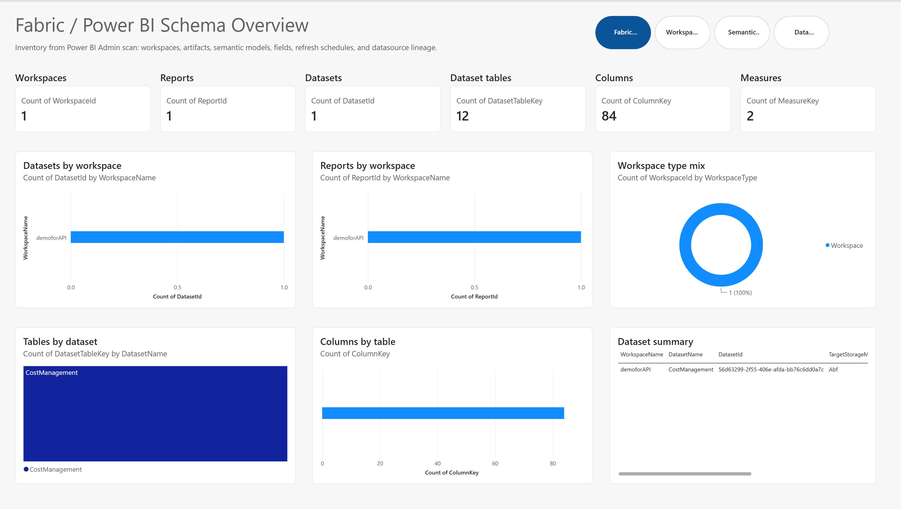
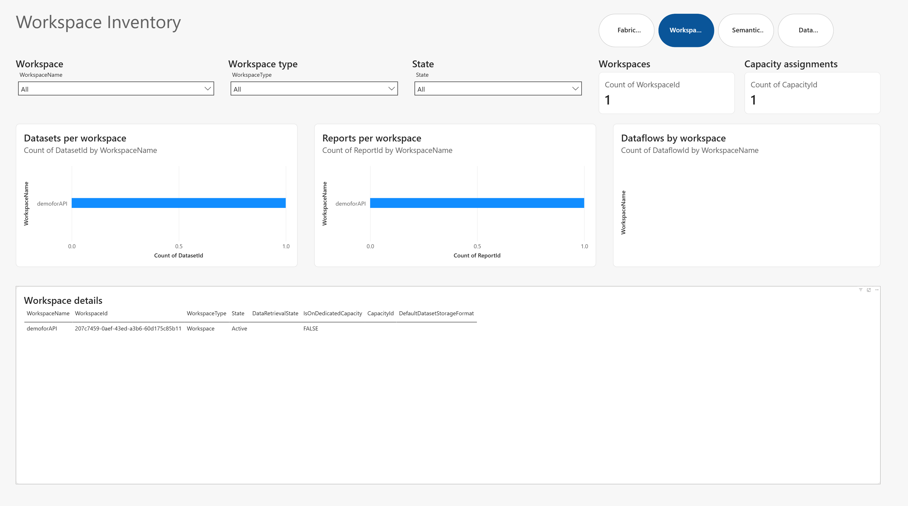
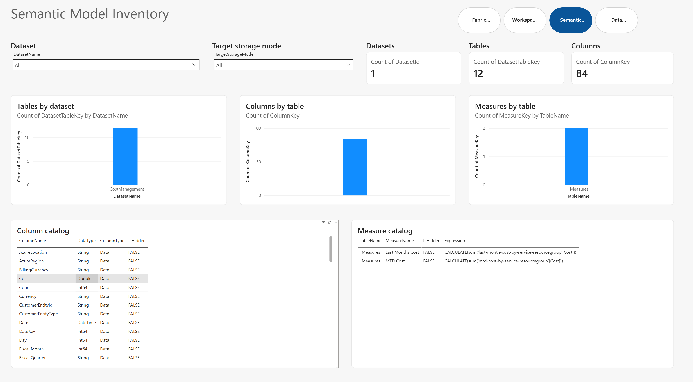
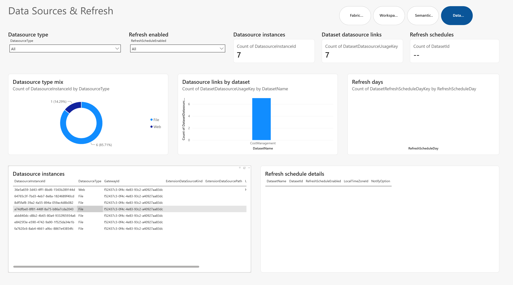

How to use it
Refresh after a catalog scan, then investigate from overview to detail.
- Run Fabric Monitor with the
Catalogmodule enabled so scan output is written under the configuredcatalog\scansfolder. - Open the PBIP at
pbip-local\Catalog\Schema.pbipin Power BI Desktop. - Refresh the semantic model. The current local query source points to
C:\Projects\Tests\monitor\catalog\scans. - Start with Fabric Schema Overview for all-up footprint counts and artifact mix.
- Move to Workspace Inventory, Semantic Model Inventory, and Data Sources & Refresh to answer operational and governance questions.
- Use Workspace Detail / Drillthrough and Dataset Detail / Drillthrough to inspect selected assets in context.
Screenshots
What the Schema/Catalog report looks like.




Report pages
What each page is for.
| Page | Purpose | Questions it answers |
|---|---|---|
| Fabric Schema Overview | Executive map of the catalog schema footprint. | How many workspaces, reports, semantic models, tables, columns, measures, and artifacts exist? |
| Workspace Inventory | Workspace-level estate review. | Which workspaces are active, what type are they, and what reports, models, dashboards, dataflows, and datamarts do they contain? |
| Semantic Model Inventory | Dataset and model structure review. | Which semantic models have many tables, columns, or measures? Which models need design or ownership review? |
| Data Sources & Refresh | Datasource and refresh dependency review. | Which datasource instances and gateways feed each model? Which refresh schedules are enabled, on what days, and at what times? |
| Workspace Detail / Drillthrough | Workspace investigation page. | What is inside a selected workspace and what downstream governance follow-up is needed? |
| Dataset Detail / Drillthrough | Semantic model investigation page. | What tables, columns, measures, datasources, report dependencies, and refresh settings are tied to a selected semantic model? |
Semantic model
What the Catalog PBIP models.
Inventory
Workspaces, Reports, Dashboards, Dataflows, Datamarts, and Datasets provide the asset catalog.
Schema
Tables, Columns, and DatasetMeasures describe the shape and complexity of semantic models.
Sources
DatasourceInstances and DatasetDatasourceUsages connect models to source systems, gateways, URLs, and datasource types.
Refresh
DatasetRefreshSchedules, DatasetRefreshScheduleDays, and DatasetRefreshScheduleTimes show refresh settings and cadence.
Relationships
The model connects datasets to reports, workspaces, datasource usages, tables, columns, measures, and refresh schedule details.
Governance
The report helps identify metadata gaps, source concentration, refresh risks, overgrown models, and stewardship candidates.
Governance use cases
What it can help you decide.
Estate cleanup
- Which workspaces have stale, thin, or confusing inventory?
- Which reports and models should be reviewed for retirement or consolidation?
- Where do naming, ownership, or documentation standards need attention?
Semantic model stewardship
- Which datasets are complex enough to need architecture review?
- Which models contain many measures, tables, or columns?
- Which reports depend on key shared semantic models?
Datasource dependency mapping
- Which models depend on which datasource instances?
- Where are gateways or source URLs concentrated?
- Which source dependencies create migration or resiliency risk?
Refresh operations
- Which semantic models have refresh schedules enabled?
- What days and times are refreshes configured for?
- Where should refresh schedules be rationalized or monitored?
Run a full catalog baseline first, refresh the Catalog PBIP, review the overview and workspace pages with platform owners, then use drillthrough pages to turn findings into stewardship actions. Repeat the scan on a schedule so the report becomes an estate inventory and governance checkpoint, not a one-time export.